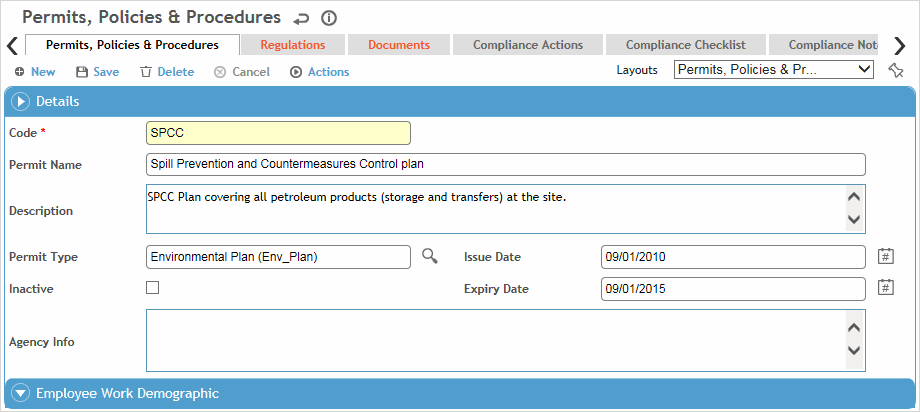

You can also enter a permit directly on the Permits tab in the applicable legal requirement record; see Managing Legal Requirements.
In the Safety menu, click Permits
or
in the Environmental menu, click Permits, Policies & Procedures
and use the provided fields and views to filter the list.
Safety views will only show permits entered via the Safety Cloud, and Environmental views will only show permits entered via the Environmental Cloud. However, both offer an “All Permits” view.
Click a link to edit a record, or click New.

To create a permit that is very similar to an existing one, select the permit and choose Actions»Clone Permit. A copy is created with “-C” appended to the code name. Open and edit the copied permit as required.
On the Permit tab:
Enter a code, name, and description for the permit.
Select the Permit Type and the dates it was issued and will expire.
If applicable, identify the location that the requirement applies to.
The Legal Requirements (Safety) or Regulations (Environmental) tab displays all legal requirements associated with this permit, either entered directly on this tab or via the Legal & Other Requirements (or Regulations) menu item (see Managing Legal Requirements).
Use the Documents tab to link an external file to the permit. Linking a file to a record offers users easy access to the file (for more information, see Linking or Importing a Document).
The Compliance Actions tab displays all findings and actions recommended (or required) related to this requirement.
For information about recording a finding and its actions, see Recording a New Finding.
To view an action’s attachment, open the finding and choose Actions»Open Document.
You can edit multiple actions inline on the list view without opening each action record: select the records and click Edit.
To view all actions related to all permits, click Compliance Calendar in the Safety menu or Compliance Obligations in the Environmental menu.
It is possible, via custom layouts, to associate a corrective plan with a permit and have its related actions automatically added and assigned to a group. See Linking a Corrective Plan’s Actions to a Permit below.
The Compliance Checklist tab allows you to associate questionnaires with a record. For information about creating and administering questionnaires, see Questionnaires.
The Compliance Notes tab allows you to record additional information that does not fit elsewhere in the form. For more information, see Adding Notes to a Form.
The Permit Conditions tab allows you to record conditions that apply to the permit; these may be associated with a specific asset.
(Environmental permits only) The Related Emission Source Test Data tab displays any emissions source test data records associated with this permit.
The Metrics tab allows you to associate custom metrics with this permit. Click a link to view the custom metric record. This list can be exported to Excel.
Setup:
Create a corrective action plan (in the CorrectivePlan look-up table) with the appropriate actions, and assign them to a group (from the GroupandTeam look-up table).
Add the Corrective Plan field to a custom permit layout.
Creating the Actions:
When you link a corrective action plan (that is assigned to a group) to a Safety (or Environmental) Permit record, the Compliance Actions tab will automatically populate with the compliance actions that match the record's GDDLOFB. The applicable actions will be assigned to the group or team members whose location matches the GDDLOFB on the permit. If a compliance action is recurrent, a series of actions will be created for it and assigned to the group or team members (up to the end date of their membership).
Changing the Actions:
If you modify a corrective plan action (in the CorrectivePlan look-up table), the changes will be applied to the linked permit record. If you want to make changes to all incomplete tasks as of a specific date, in the look-up table you must:
Change the Effective Date as appropriate.
Clear the Is Recurrent checkbox.
Save the corrective plan record.
Set new Is Recurrent parameters. When you save again, the incomplete tasks in the linked permit record are deleted, and new tasks are added.
Removing the Link to the Corrective Plan:
If you remove the corrective action plan from a permit record, any associated actions will remain on the Compliance Actions tab and must be deleted manually.